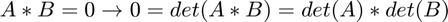

Exercices 1 et 2:
Contents
Exercice 1, Opérations sur les vecteurs
Initialisation des variables de l'énoncé:
q=[2,1]; r=[3,0]; s=[1,-2,3]; t=[1,1,1]; u=[-2,4,-1];
v=[24:-1:-25];
Créé un vecteur où chaque élément vaut le tout, commençant à 24 et finissant à 25.
w=[100:-2:2];
Idem que précédement avec un pas de -2, un début à 100 et une fin à 2.
1.1)
resultat_11 = q-r
resultat_11 =
-1 1
q+3v n'est pas défini car "+" n'est défini que pour deux élément d'un même ensemble
resultat_13 = s + 3*t - u
resultat_13 =
6 -3 7
1.2)
resultat_21 = dot(q, r); resultat_22 = dot(s,s) - 2*dot(s,t) - dot(s,u);
<s|v> n'est pas défini car le produit scalaire est une forme bilinéaire, or ici s et v n'appartiennent pas au même ensemble.
resultat_24 = dot(v, w)
resultat_24 =
19550
resultat_25 = dot(v, w)
resultat_25 =
19550
1.3)
resultat_31 = norm(v)
resultat_31 = 102.1029
resultat_32 = power(norm(s), 2)
resultat_32 =
14
Exercice 2, Différence entre A*B et A.*B
D'après la documentation on voit que est le produit matriciel usuel, mais , quant à elle, représente la matrice C définie telle que pour tout i,j:
i.e. multiplication composante par composante.
On obtient donc que
ou
(en effet )
Et On peut donc prendre deux matrices A et B inversible comme suit:
A = [1 0 1; 0 1 0; 0 0 1]
A =
1 0 1
0 1 0
0 0 1
B = [0 1 0; 1 0 1; 1 1 0]
B =
0 1 0
1 0 1
1 1 0
is_invertible = det(A)*det(B) ~= 0
is_invertible = logical 1
Retourne 1 i.e. dets effectivement non-nuls.
null_matrix = A.*B
null_matrix =
0 0 0
0 0 0
0 0 0
On a bien: